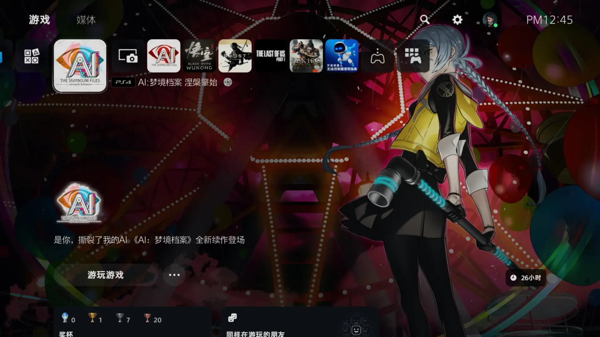
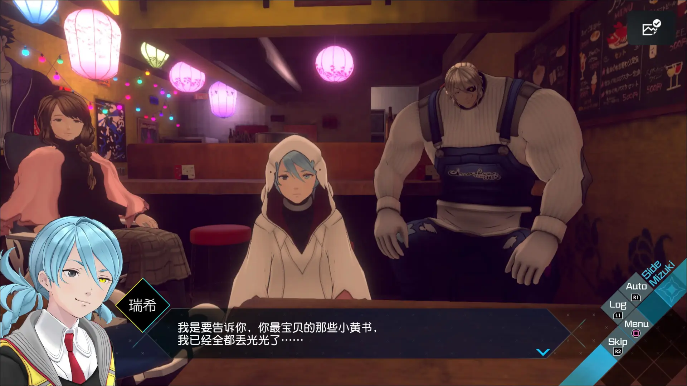
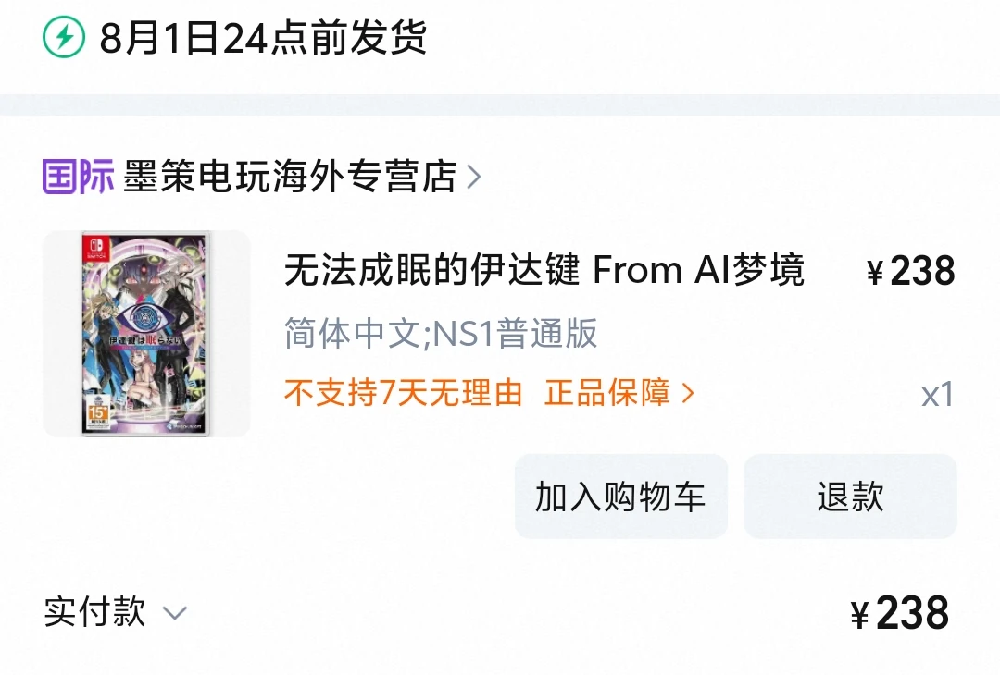

|2025-07-25|
在 ns 上通关《AI：梦境档案》之后，我就一直很期待它的续作。鉴于 ns 上第一部糟糕的性能表现，我购入了 ps4 实体光盘，然后在 ps5 上体验本作。国内第一部和第二部的光盘基本都被贩子收走，为了追求品相我选择煤炉海淘。总共两部的实体盘和第一部原声 CD 一共花了 9306 円（包括 1606 円国际运费）……真不便宜啊。
游戏主线 26 小时，没有追求白金，我没有收集和二周目的习惯。打越老师的纯熟手法筋道得劲，抽象行为、谐音梗和黄段子比一代只增不减。我和这种风格 100% 对胃口，所以涅槃肇始在我这里就是一场顶级盛宴，26 个小时的完美对上电波的爽感。
看看《无法成眠的伊达键 - From AI：梦境档案》的发售宣传片吧。千言万语，不及行动。
